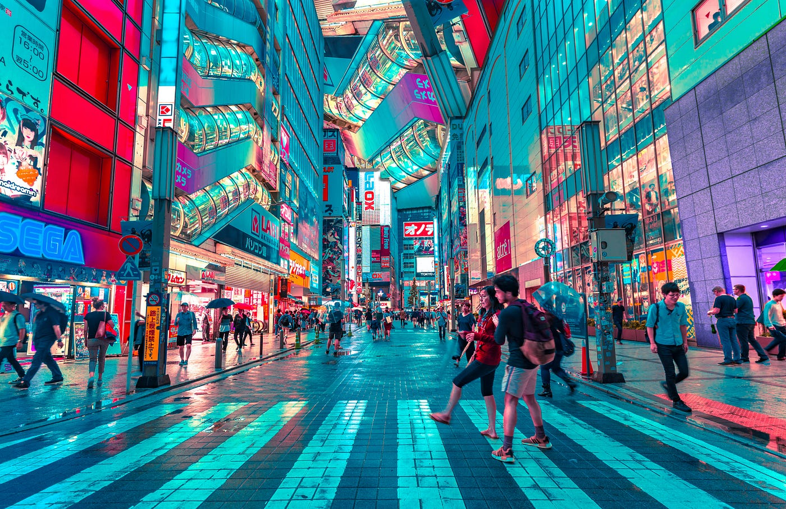
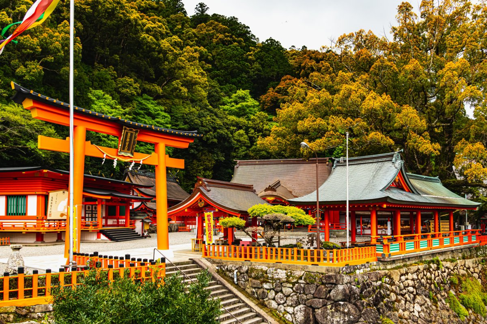
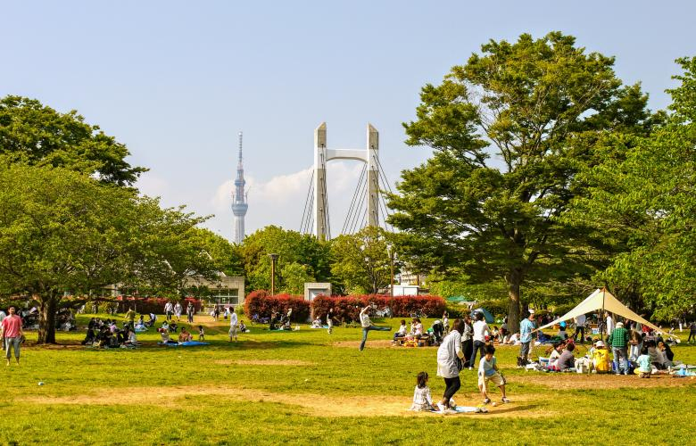

-
Akihabara is the epicenter of anime, manga, and gaming, offering a
vast array of stores dedicated to these interests.
-
Harajuku is known for its unique and bold street fashion, where youth
express themselves through colorful and eclectic outfits.
-
J-Pop music plays a significant role in Tokyo’s culture, with concerts
and idol performances being a major part of the city's entertainment
scene.

-
Tokyo is home to many Shinto shrines and Buddhist temples, such as
Senso-ji Temple in Asakusa and Meiji Shrine in Shibuya.
-
Locals regularly visit shrines for New Year's prayers and other
significant life events like weddings and funerals.
-
Rituals such as lighting incense, offering prayers, and participating
in festivals are common ways that both locals and visitors connect
with Japan's spiritual heritage.

-
Tokyo boasts beautiful parks and gardens like Ueno Park, where you can
enjoy cherry blossom viewing in spring.
-
Shinjuku Gyoen National Garden offers a peaceful escape with
traditional Japanese, English, and French-style gardens.
-
Parks like Yoyogi Park and Hibiya Park serve as relaxing retreats for
locals to engage in outdoor activities, picnics, and festivals.